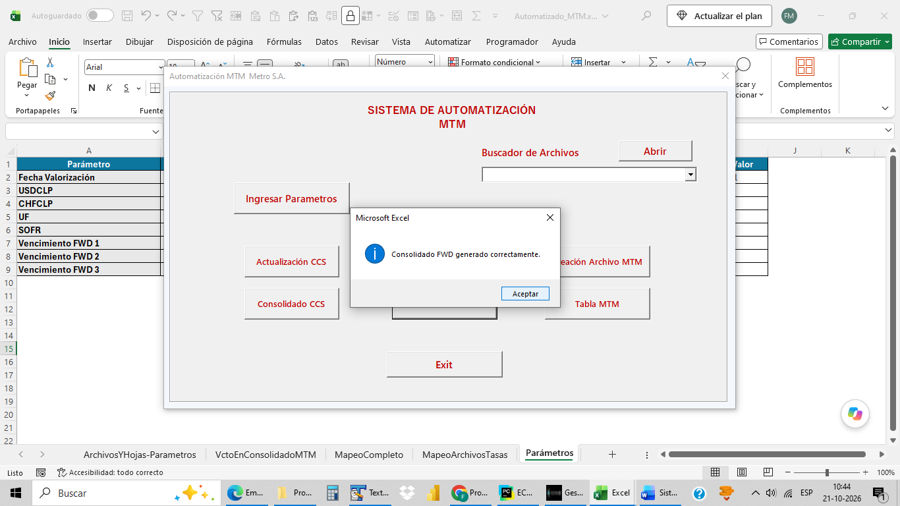
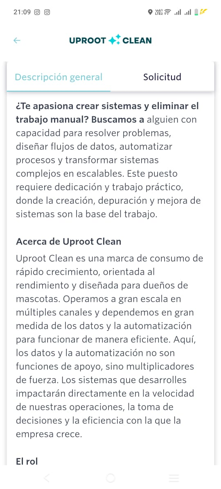
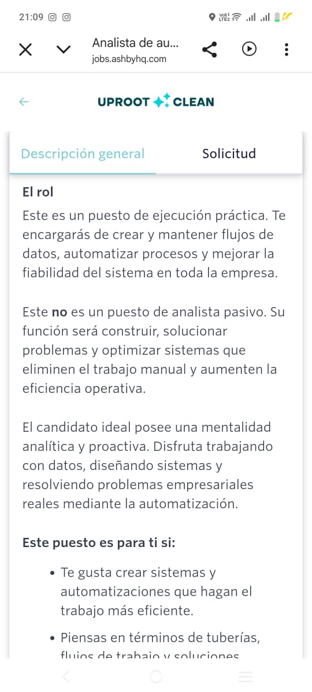
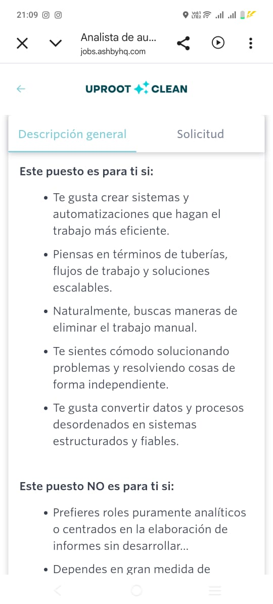
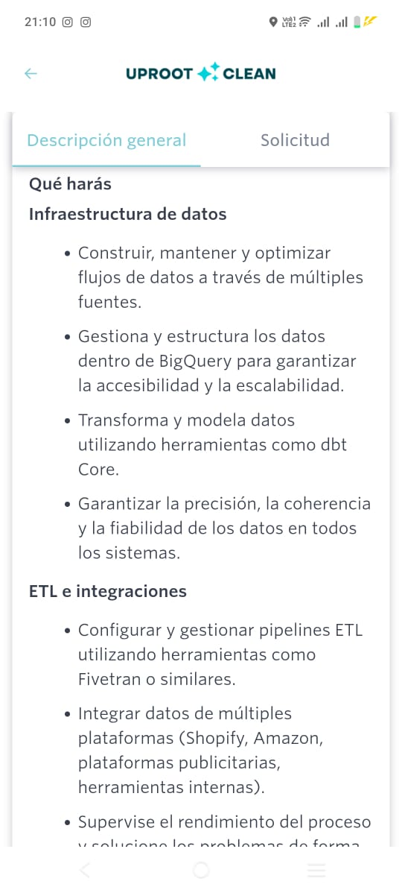
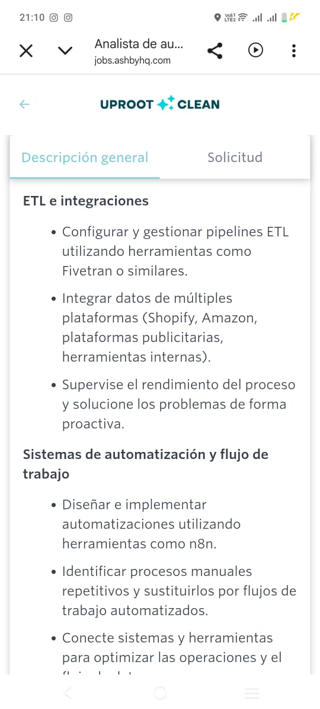
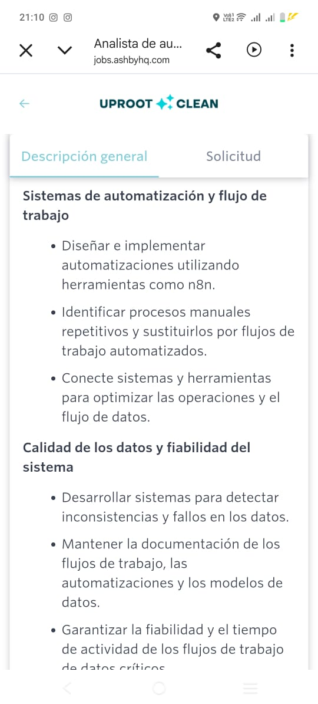
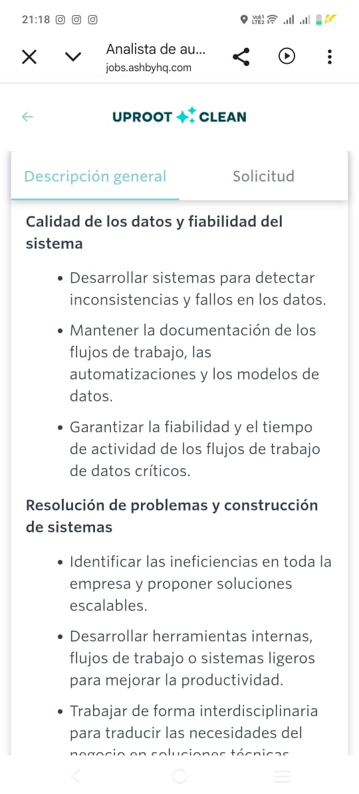
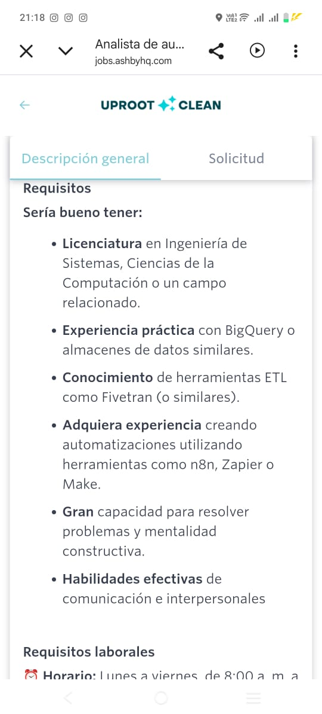
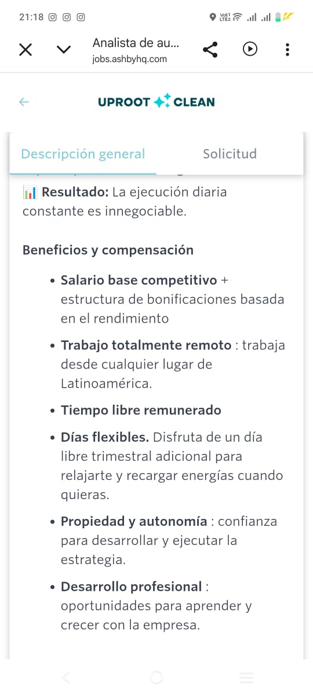

PERFIL
Tecnología, datos y negocio en un solo perfil
Profesional con más de 20 años de experiencia en procesamiento y análisis de datos, desarrollo de sistemas, automatización y gestión operacional.
Comprendo la lógica de los procesos, estructuro los datos y los convierto en herramientas reproducibles que reducen tiempos y mejoran el control.
PROYECTOS
Evidencias concretas de automatización
01
AUTOMATIZACIÓN FINANCIERA
Sistema de Automatización MTM
4-5 h → 5 minReducción declarada
El problema
Revisión documental, actualización de tasas, proceso FWD, consolidación y generación de tablas MTM mediante un flujo manual.
La solución
Sistema en Excel/VBA que ejecuta el proceso por etapas, informa resultados y deja las tablas listas para análisis.




02
E-COMMERCE Y DATOS
ECONOMIC
250 → 300Productos documentados
Tienda Shopify enlazada con CJDropshipping y DSers. El catálogo se construye mediante un Panel de Gestión de Productos con filtros internos de Gestión y de Marketing y Publicidad.
CJDropshipping / DSers→Captura→Filtros internos→Base Madre→Shopify









50incorporados
300productos finales
OKintegridad
0errores
TRAYECTORIA
Experiencia profesional aplicada
Profesional independiente
Sistemas, automatización, análisis de datos, KPI y soluciones financieras.
Offerwise | Gerente de Procesamiento de Datos y Codificación
Liderazgo regional, coordinación técnica, KPI, calidad y entregas en cinco países.
EOL Research | Analista Senior
Plataformas de datos, SPSS e informes analíticos.
Ipsos | Analista de Datos
Procesamiento, análisis y Excel avanzado.
Banco do Brasil | Programador AS400
RPG, sistemas de custodia y soporte operativo.
CONTACTO
Conversemos sobre automatización y datos
Viña del Mar, Chile